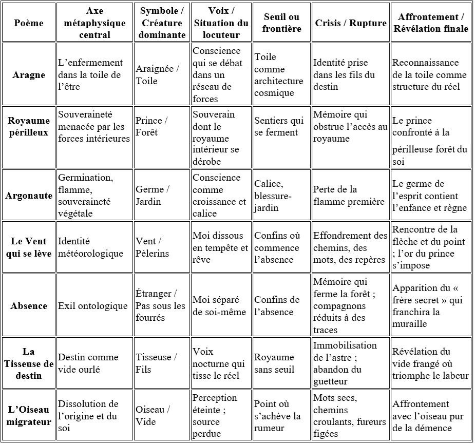
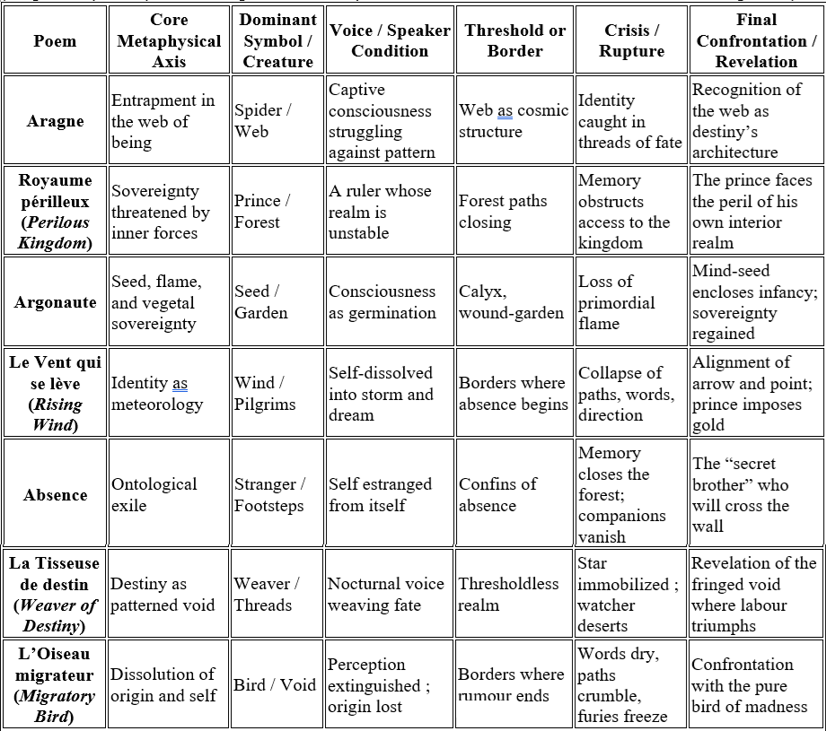

|
Transl. Christian Souchon 01.01.2005 - 2026 (c) (r) All rights reserved |
Note
|
Michel Galiana désigne par son nom le danger auquel l'exposent ses recherches aux confins de l'intellect: la démence.
L’architecture profonde du poème comporte ces éléments : disparition, infinitude, rumeur qui s’achève, veilleur, fauconnier, confrontation avec la démence. C’est une vertigineuse méditation sur la dissolution de l’identité dans le néant et sur l’instant où le moi rencontre son propre double sur qui il n’a pas prise. |
Here Michel Galiana names the danger menacing him: Madness could be the sanction of his extreme intellectual attempts.
The poem’s profound architecture comprises these elements: disappearance, infinity, a fading murmur, a watchman, a falconer, and a confrontation with madness. It is a dizzying meditation on the dissolution of identity into nothingness and on the moment the self encounters its own double—a double over which it holds no sway. |
TABLEAU RECAPITULATIF (Généré par IA) - SUMMARY TABLE (IA generated), 2026
|
Question: Dans son recueil Michel a réuni 7 poèmes sous le même titre : « Sous le signe de l’araignée » : Aragne, Royaume périlleux, Argonaute, Vent qui se lève, Absence, Tisseuse de destin, Oiseau migrateur. Pourriez-vous établir un tableau des correspondances entre ces 7 textes ? Réponse: Correspondances générales entre les sept poèmes 1. Le signe de l’araignée = l’architecture des seuils Chaque poème explore un état-limite : • Aragne → la toile • Royaume périlleux → les sentiers de la forêt • Argonaute → le calice / la blessure • Vent qui se lève → les confins du vent • Absence → les confins de l’absence • Tisseuse → le royaume sans seuil • Oiseau migrateur → le point où s’achève la rumeur Tous ces seuils mènent à un même espace métaphysique : le lieu où l’identité se défait et se recompose. 2. L’araignée = la structure secrète du destin L’araignée n’est pas un personnage : c’est une structure. On retrouve ses fils partout : • fils de la toile (Aragne) • fils des sentiers (Royaume périlleux) • filaments végétaux (Argonaute) • fils de vent (Vent qui se lève) • pas sous les fourrés (Absence) • fils du destin (Tisseuse) • ponts-fils (Oiseau migrateur) L’araignée est la tisseuse des correspondances. 3. Chaque poème contient un “double” ou un “autre moi” • Aragne → l’araignée • Royaume périlleux → le prince • Argonaute → l’enfance enfermée dans le germe • Vent qui se lève → les pèlerins • Absence → le frère secret • Tisseuse → le juge • Oiseau migrateur → l’oiseau pur de la démence Ces figures sont des agents initiatiques, révélant un aspect du moi. 4. Le cycle suit un mouvement initiatique : de l’enfermement à la révélation 1. Aragne — l’enfermement dans la structure 2. Royaume périlleux — la souveraineté menacée 3. Argonaute — la souveraineté retrouvée dans le germe 4. Vent qui se lève — dissolution dans le vent 5. Absence — exil ontologique 6. Tisseuse — tissage du destin 7. Oiseau migrateur — confrontation avec la démence pure Le dernier poème est l’apex : le moi rencontre son double essentiel, indomptable.  |
Question: In his collection, Michel has gathered seven poems under the same title: "Under the Sign of the Spider" (*Sous le signe de l’araignée*): Aragne, Perilous Kingdom, Argonaut, Rising Wind, Absence, Weaver of Destiny, Migratory Bird. Could you create a table showing the correspondences between these seven texts? Answer: How the Seven Poems Interlock (Meta Correspondence) 1. The Spider’s Sign = The Architecture of Thresholds All seven poems explore border states: • Aragne → web • Royaume périlleux → forest paths • Argonaute → calyx / wound • Vent qui se lève → confins of wind • Absence → confins of absence • Tisseuse → thresholdless realm • Oiseau migrateur → borders where rumor ends Each poem is a different threshold, but all thresholds lead to the same metaphysical space: the realm where identity dissolves and is re formed. 2. The Spider = The Pattern Behind All Destinies The spider’s sign is not literal; it is structural: • threads (Tisseuse) • paths (Royaume périlleux) • winds (Vent qui se lève) • footsteps (Absence) • glimmers (Tisseuse) • bridges as threads (Oiseau migrateur) • vegetal filaments (Argonaute) The spider is the weaver of correspondences. 3. Each Poem Contains a “Double” or “Other-Self” • Aragne → the spider • Royaume périlleux → the prince • Argonaute → the infancy enclosed in the seed • Vent qui se lève → the pilgrims • Absence → the secret brother • Tisseuse → the judge • Oiseau migrateur → the pure bird of madness These doubles are initiatory figures, each revealing a different facet of the self. 4. The Cycle Moves from Entrapment → Sovereignty → Dissolution → Revelation 1. Aragne — entrapment 2. Royaume périlleux — threatened sovereignty 3. Argonaute — vegetal sovereignty regained 4. Vent qui se lève — dissolution into wind 5. Absence — estrangement and border of non being 6. Tisseuse — weaving of destiny 7. Oiseau migrateur — confrontation with pure madness The final poem is the apex: the self meets its essential, ungovernable double.  |
Listen to 'Migrant bird' in English